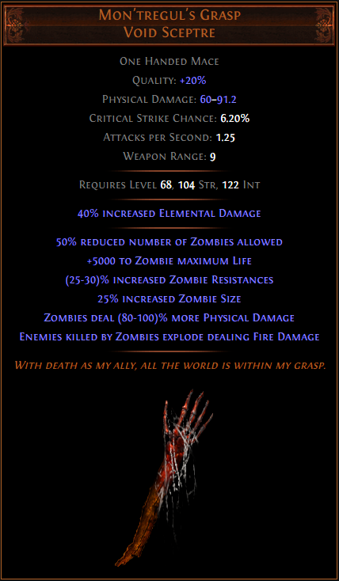
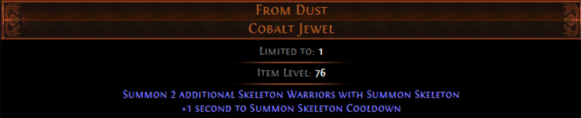
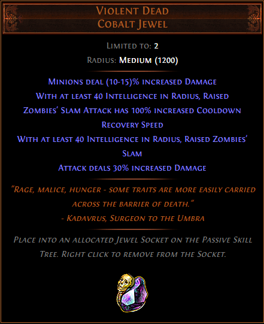

19.6.10 추가내용
POB 돌려보니 더 좋은 서포트젬 조합이 있어서 변경했습니다.
3) ★ 무기(Mon'tregul's Grasp) : 1 알케미 내외

좀비를 완전 딴판으로 바꿔주는 무기입니다.
① 좀비의 숫자를 절반으로 줄입니다: 어센던시, 패시브 스킬만으로 좀비 10마리까지 소환 가능한데, 몬트레굴을 착용하면 5마리까지만 소환됩니다.
참고로, 소수점은 무시합니다. 최대 11마리여도, 5.5마리면 반올림하지 않고 내림해서 5마리가 됩니다.
② 좀비의 라이프를 5000 늘려줍니다: 이 효과로 좀비의 체력을 2배 이상 늘릴 수 있습니다(20렙 스킬젬 기준 좀비 체력 4607).
이것만으로 좀비들이 웬만해선 죽지를 않아요.
③ 좀비에 의해 죽은 적이 폭발하면서 파뎀을 입힙니다: 좀비의 빠른 맵핑을 위한 핵심 옵션입니다.
이걸로 째깐둥이 몹들이 뭉쳐있으면, 좀비의 싸다구 한방에 다 터져 죽습니다.
④ 기타 옵션으로, 좀비가 25% 커지고 물뎀이 증가합니다.
그리고 좀비의 레지를 30% 늘려줍니다.....만, 이거 없어도 좀비는 풀레지네요.
Q) 싸다구가 좋다곤 하지만 그래도 좀비가 많으면 좋은 거 아니에요?
A) 싸다구가 그냥 좋은게 아니라 겁나 좋아요. 맵핑 속도도 그렇고 터져 죽을때 쾌감도...
그리고 이건 제 체감입니다만, 미니언이 너무 많으면 보스전에서 근접 미니언들이 딜을 못하는 상황이 나올 수도 있습니다.
4) ★ From Dust Jewel : 1 알케미

한 번에 스켈레톤을 2마리 더 소환할 수 있게 해주는 대신, 1초 쿨타임이 생깁니다.
3번 어센던시와 함께라면 한 번에 5마리의 스켈레톤을 소환할 수 있습니다.
Q) Limited To는 뭔가요?
A) 최대로 착용 가능한 쥬얼의 개수입니다. From Dust는 1개까지만 착용이 가능하다는 뜻입니다.
아래의 Violent Dead는 최대 2개까지 착용 가능합니다.
5) ★ Violent Dead Jewel : 1 알케미 * 2개 (1개는 Act 5 퀘스트 보상으로 받을 수 있음)

미니언 딜을 올려주고, 좀비의 슬램 어택핵싸다구의 딜을 올려주고 쿨타임을 줄여줍니다.
Q) With at least 40 Intelligence, 이건 뭔가요?
A) 쥬얼 노드 주변의 노드들의 능력치 합이 40 Int 이상일 때 옵션이 발동된다는 뜻입니다.
POB에서 비어있는 쥬얼 노드에 마우스를 올려보시면, 이 노드에 어떤 능력치 조건이 있는 쥬얼을 끼우면 되는지 알려줍니다!